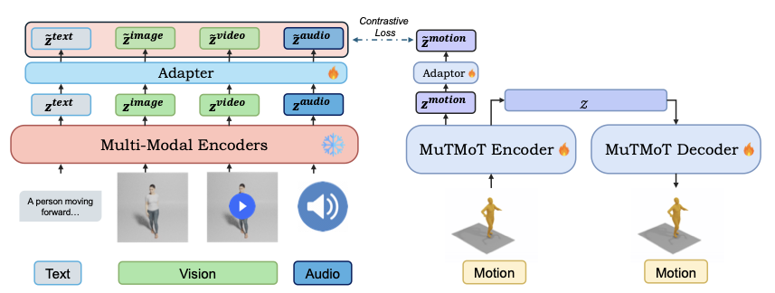
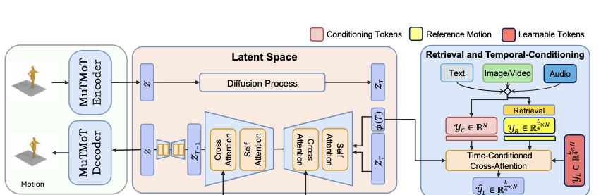

Method Overview
MotionBind consists of two main components: MuTMoT (Multi-Scale Temporal Motion Transformer) for multi-modal representation learning and REALM (Retrieval-Augmented Latent diffusion Model) for motion generation.
MuTMoT Architecture

MuTMoT is a transformer-based hierarchical encoder-decoder architecture that encodes motion sequences into compact embeddings aligned with a shared multi-modal space. It captures motion dynamics at multiple temporal resolutions, producing representations that reflect both fine-grained pose transitions and high-level action semantics. The architecture extends LanguageBind to include human motion, enabling joint cross-modal reasoning and retrieval across text, vision, audio, and motion.
REALM Architecture

REALM is a retrieval-augmented latent diffusion model that generates motion sequences conditioned on any modality (text, video, or audio). It operates in the compact latent space defined by the MuTMoT encoder and uses temporal conditioning with learnable frame tokens that dynamically attend to conditioning context throughout the denoising process. By retrieving semantically similar motions from a large database, REALM enhances realism and controllability during generation.